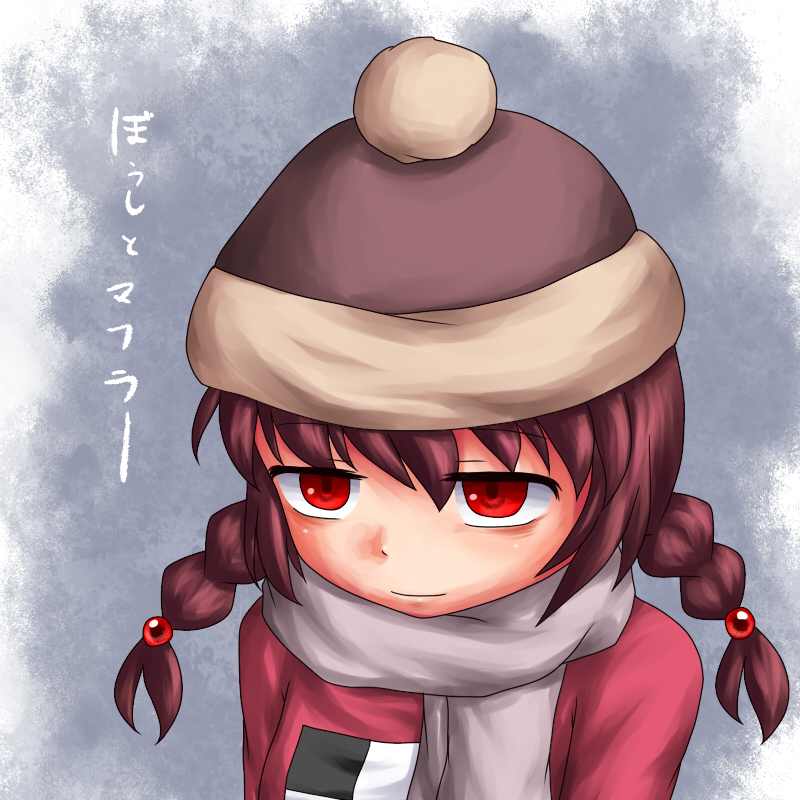

it was my birthday on the 6th, i am now 18... just didnt feel like updating my site for a long time ... i got a gaming pc and ive been using it a lot. before then, i had a mac laptop and a really shitty windows laptop ive had since 2018 that barely ran well. i am very glad to finally have this pc because i can do so much more now. i've been playing webfishing a lot recently, and today i played risk of rain 2 with friends.
hmm what else is going on... i have been trying to find a job and have been applying to many places with only one responding to me saying yeah we can schedule an interview, and then they cancelled it and said they'll reschedule, but then they ghosted me until i called and asked about the interview, and thenn they had a response of saying "oh we filled the position already" GRRR
the reason i want to get a job so badly is because i really want to save up to go to two anime cons in 2025, anime boston and touhoufest. mostly touhoufest, since i'm going to have to pay for a lot (plane ticket, hotel, con ticket, cosplay, merch.......) i live in massachusetts so anime boston is way easier to get to. i've been planning to make a koishi cosplay from scratch, and bought a lot of fabric for it. i got a sewing machine for my birthday, so i hopefully should get a lot done. i also will have an ita bag with lots of merch too....